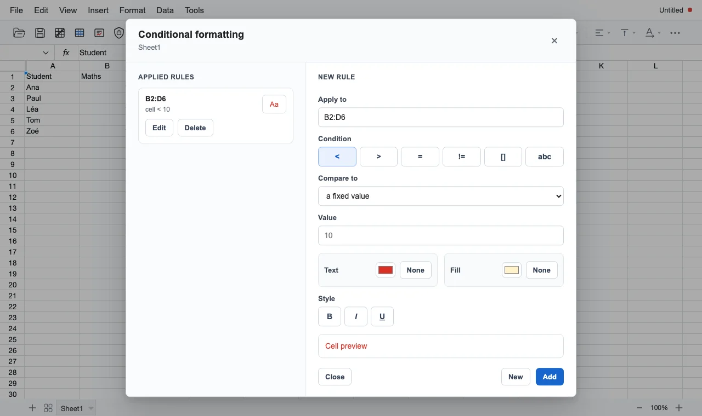

Conditional formatting
A rule changes the look of the cells of a range that meet a condition. It follows the values, typed or calculated.
Creating a rule
- Select the range, without its header.
- or Format › Conditional formatting.
- Choose the condition, the value to compare with, the colors or the style.
- Add.

| Condition | The cell |
|---|---|
< | is less than |
> | is greater than |
= | is equal to |
!= | is different from |
[] | is between two values, bounds included |
abc | contains a text, upper or lower case |
What to compare with
| Compare to | Example |
|---|---|
| a fixed value | marks below 10 |
| a fixed cell | marks below the threshold written in F1 |
| a same-row column | in column C, values above those of column B, row by row |
Look
Text and Fill choose the colors, None removes them; B, I, U make the text bold, italic, underlined. At least one color or style is needed.
Several rules
The column on the left lists the rules of the sheet: Edit, Delete. If several rules apply to a cell, the last one in the list prevails, color by color.
In a range covered by a rule, the text and fill colors given directly to the cells are no longer displayed.
Rules are saved in the Excel file as Excel conditional formatting.